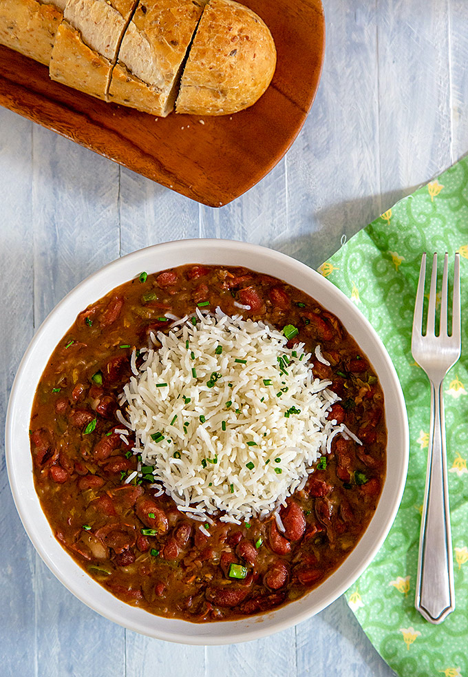

Red Beans and Rice

Description
This is my absolute favorite go-to recipe any time of the year. All you need are a handful of cajun-style
spices, a few veggies, and some rice and beans for this delicious staple. We'll soak our beans either overnight
or for a few hours before cooking. I prefer small red beans, but any kind of red bean should work. My recipe is geared
towards the instant pot and an electric rice cooker, but cooking times can be adjusted for traditional stovetop cooking.
Ingredients
- 3-4 stalks celery, diced
- 1 green bell pepper, diced
- 1 medium onion, diced
- 1 pound small red beans, soaked and rinsed
- 1 cup rice, rinsed
- 2 teaspoons smoked paprika
- 2 teaspoons thyme
- 2-3 teaspoons cajun seasoning
Steps
- Sauté celery, bell pepper, and onion in a little water or vegetable broth for 5 minutes using the sauté function of the instant pot.
- Add beans and spices; stir.
- Close lid and set instant pot to pressure cook for 50 minutes. Let pressure release naturally for 30 minutes.
- While waiting for pressure to release, cook rice using rice cooker instructions.
- Combine rice and beans into bowl and serve!